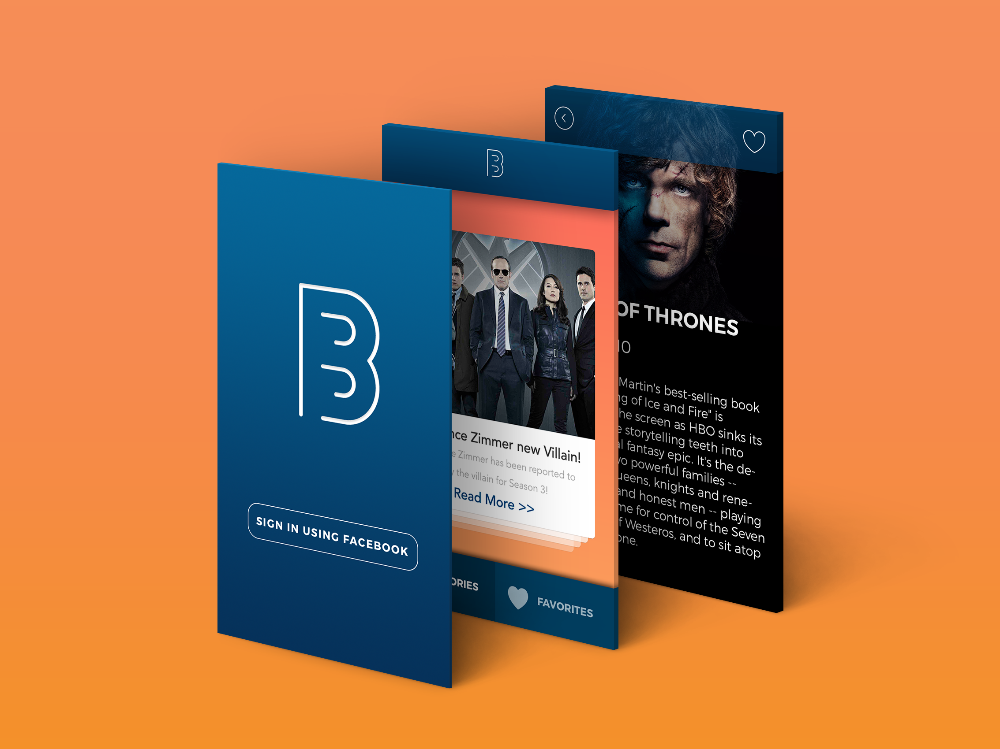

Summer 2015 - Present
BINGE
A Web/Mobile Application that aims to redefine how users' get their news and updates on the topics they love.
BACK
THE IDEA
Everybody is crazy about something. I love watching TV Shows like Game of Thrones, Arrow, etc. and I normally get my updates from different websites. But it was always hard to follow all of them. I used to bookmark the different pages for each topic but it was not the best way. That's when I had the idea for Binge. So, I decided to work on a platform that allows the users to simply follow the topics and then they would be able to get all updates in one place. So you could follow any TV Show or sports team and get all the new promotional videos, actor statements, rumor articles, live scores, basically all news on any topic right in one place.
THE TEAM
My team included myself, Rusheel Shahani, Tim Mui,and . Being the only designer, I worked closely with the developers. Together, we worked on the project during MHacks and managed to build a prototype for the iOS Platform. However, I had conducted some research beforehand which helped in the design process.
GOALS
The ideal product would solve the users' problem of following multiple topics easily while getting updates in an intuitive and easy to interpret manner. After a lot of brainstorming and analysis of the user research we decided to design for 3 main features: Getting the news on a topic, Searching for a topic and Liking a topic for future updates.
RESEARCH
I created a survey and gathered 200+ responses from students from different college campuses and working people. This helped me define what exactly I needed to focus on. I also interviewed several members of the Hackathon Hackers Group and its subgroups. The following were the biggest takeaways from the research:
1. Most of the users rely on Google for their updates. They normally just google the topic they want the news on and get their updates. However, this doesn't allow them to get notifications about new updates.
2. Another popular solution was 'Flipboard' which is very similar in its concept but only allows the users to follow the predefined topics which are many times biased towards the US. Even the news and updates are mainly from US Content Creators and therefore provide only one point of view. This gap was felt by a lot of users from India and the other Asian countries.s
3. Majority of the users follow more than 5 topics regularly Around 80% of the people surveyed followed more than 5 topics and thus didn't like the act of googling each topic every time as the process was very inefficient.
4. A lot of the users love reading what others' are thinking about the topic or an update A lot of interest was shown in the 'Comments' feature.
EXPLORATION AND BRAINSTORMING
After analyzing the results, I started sketching out some ideas on the direction we can take with this product. What are the steps the user would take to follow a topic? What does it look like when they find a topic? How can the user view the articles?
USE CASES
1. To search for topics they want to follow
2. Like a topic that the user can get get updates on in the future
3. Getting regular updates.
The update/article listings feature was a pretty challenging problem since it is one of the most important features of the product. It's the way users will get updates on the topics they like; the essence of the idea itself. I wanted this to be intuitive and I wanted users to feel comfortable using this so I explored different ideas and asked for feedback from different users and other designers. The feedback showed that a Tinder-like list of articles was a preferred option. Check out some of my ideas sketched out below.
We had to figure out how exactly a user would need to use this product and what exact screens needed to be thought through. This helped understand what the actual problem was and where we can solve it. We used a persona of Jane, a young adult who follows around 5-7 topics regularly including football teams and TV Shows. What would she want to see? What would she expect when using this product?
We came up with many interesting ideas which included a 'Perspective' feature that provides the users with different point of views on the same event that would help the user get a more comprehensive outlook on a particular happening/update. However, due to the time restraints during the hackathon we decided to move forward with just the main features so that we could have a MVP ready by the end of the weekend.
HIGH FIDELITY PROTOTYPE
CURRENT STATUS
Even though we had an alpha version ready by the end of MHacks, we didn't send the application out for testing as we believed that the product lacked a wow factor which would help in building traction and the application felt more like a generic news app. Currently we are pursuing a different avenue which involves the user being able to get short video snippets before each article to help them determine if they want to read that article. We have gotten some good response to the idea and have thus been working on incorporating that in our mobile app.